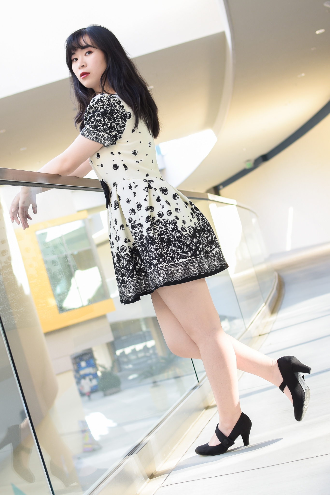

Design. Dance. Create.


|
Hi there! I'm a UX/UI designer based in Brea, California. I have a passion for designing, wireframing, prototyping, and serving others in any way I can. I have a black and white fluffy tuxedo cat named Shadow. He is the absolute fluff of my life! Previously, I served on the cabinet board for Biola Hula Halau, which I absolutely love doing. I choreograph, lead, dance and teach whenever I can. |